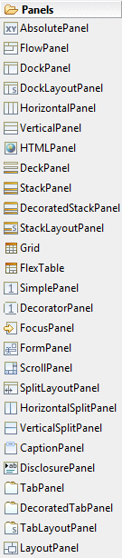
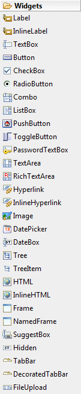
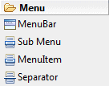
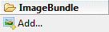
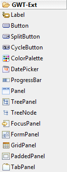
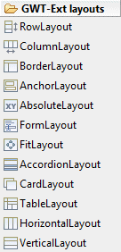
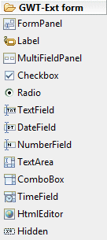
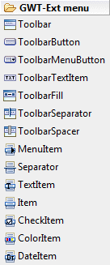

GWT Designer Palette
GWT Designer provides the following palette for creating GWT
applications.
The palette may be fully configured using the
Palette Manager.
|

|
- AbsolutePanel - An absolute panel positions all of its
children absolutely, allowing them to overlap. Note that this
panel will not automatically resize itself to allow enough room
for its absolutely positioned children. It must be explicitly
sized in order to make room for them.
- CaptionPanel - A panel that wraps its contents in a
border with a caption that appears in the upper left corner of
the border. This is an implementation of the fieldset HTML
element.
- DeckPanel - A panel that displays all of its child
widgets in a 'deck', where only one can be visible at a time.
- DecoratedStackPanel - A panel that stacks its
children vertically, displaying only one at a time, with a
header for each child which the user can click to display. It
wraps each item in a 2x3 grid (six box), which allows users to
add rounded corners.
- DecoratedTabPanel - A panel that represents a tabbed
set of pages, each of which contains another widget. Its child
widgets are shown as the user selects the various tabs
associated with them. The tabs can contain arbitrary HTML.
- DecoratorPanel - A panel that contains single widget
wrapped in stylized boxes, which can be used to add rounded
corners.
- DisclosurePanel - A widget that consists of a header
and a content panel that discloses the content when a user
clicks on the header.
- DockLayoutPanel - A panel that lays its child widgets out
"docked" at its outer edges, and allows its last widget to take
up the remaining space in its center. Note: this widget will
only work in standards mode.
- DockPanel - A panel that lays its child widgets out
"docked" at its outer edges, and allows its last widget to take
up the remaining space in its center.
- FlexTable - A flexible table that creates cells on
demand. It can be jagged (that is, each row can contain a
different number of cells) and individual cells can be set to
span multiple rows or columns.
- FlowPanel - A panel that formats its child widgets
using the default HTML layout behavior.
- FocusPanel - A simple panel that makes its contents
focusable, and adds the ability to catch mouse and keyboard
events.
- FormPanel - A panel that wraps its contents in an
HTML FORM element.
- Grid - A rectangular grid that can contain text,
html, or a child Widget within its cells.
- HorizontalPanel - A panel that lays all of its
widgets out in a single horizontal column.
- HorizontalSplitPanel - A panel that arranges two
widgets in a single horizontal row and allows the user to
interactively change the proportion of the width dedicated to
each of the two widgets. Widgets contained within a
HorizontalSplitPanel will be automatically decorated with
scrollbars when necessary.
- HTMLPanel - A panel that contains HTML, and which can
attach child widgets to identified elements within that HTML.
- LayoutPanel - A panel that lays out its children
using horizontal and vertical constraints. Note: this widget
will only work in standards mode.
- ScrollPanel - A simple panel that wraps its contents
in a scrollable area.
- SimplePanel - A panel that contains only one widget.
- SplitLayoutPanel - A panel that adds user-positioned
splitters between each of its child widgets. Note: this
widget will only work in standards mode.
- StackLayoutPanel - A panel that stacks its children
vertically, displaying only one at a time, with a header for
each child which the user can click to display. Note: this
widget will only work in standards mode.
- StackPanel - A panel that stacks its children
vertically, displaying only one at a time, with a header for
each child which the user can click to display.
- TabLayoutPanel - A panel that represents a tabbed set of
pages, each of which contains another widget. Its child widgets
are shown as the user selects the various tabs associated with
them. The tabs can contain arbitrary HTML. Note: this widget
will only work in standards mode.
- TabPanel - A panel that represents a tabbed set of
pages, each of which contains another widget. Its child widgets
are shown as the user selects the various tabs associated with
them. The tabs can contain arbitrary HTML.
- VerticalPanel - A panel that lays all of its widgets
out in a single vertical column.
- VerticalSplitPanel - A panel that arranges two
widgets in a single vertical column and allows the user to
interactively change the proportion of the height dedicated to
each of the two widgets. Widgets contained within a
VerticalSplitPanel will be automatically decorated with
scrollbars when necessary.
|
|
|

|
- Button - A standard push-button widget.
- CheckBox - A standard check box widget.
- Combo - A widget that presents a list of choices to the
user as a drop-down list.
- DateBox - A text box that shows a DatePicker when the
user focuses on it.
- DatePicker - A standard GWT date picker
- DecoratedTabBar - A decorated horizontal bar of
folder-style tabs.
- FileUpload - A widget that wraps the HTML <input
type='file'> element. This widget must be used with FormPanel if
it is to be submitted to a server.
- Frame - A widget that wraps an IFRAME element, which
can contain an arbitrary web site.
- Hidden - Represents a hidden field in an HTML form.
- HTML - A widget that can contain arbitrary HTML.
- Hyperlink - A widget that serves as an "internal"
hyperlink. That is, it is a link to another state of the running
application. When clicked, it will create a new history frame
using History#newItem, but without reloading the page.
- HTML - A widget that can contain arbitrary HTML.
- Image - A widget that displays the image at a given
URL.
- Label - A widget that contains arbitrary text, not
interpreted as HTML.
- InlineHTML - A widget that can contain arbitrary HTML.
This widget uses a <span> element, causing it to be displayed
with inline layout.
- InlineHyperlink - A widget that serves as an "internal"
hyperlink. That is, it is a link to another state of the running
application. It should behave exactly like Hyperlink, save that
it lays out as an inline element, not block.
- InlineLabel - A widget that contains arbitrary text,
not interpreted as HTML. This widget uses a <span> element,
causing it to be displayed with inline layout.
- ListBox - A widget that presents a list of choices to
the user, either as a list box or as a drop-down list.
- NamedFrame - A Frame that has a 'name' associated with
it. This allows the frame to be the target of a FormPanel.
- PasswordTextBox - A text box that visually masks its
input to prevent eavesdropping.
- PushButton - A normal push button with custom styling.
- RadioButton - A mutually-exclusive selection radio
button widget.
- RichTextArea - A rich text editor that allows complex
styling and formatting.
- SuggestBox - A text box or text area which displays a
pre-configured set of selections that match the user's input.
- TabBar - A horizontal bar of folder-style tabs.
- TextArea - A text box that allows multiple lines of
text to be entered.
- TextBox - A standard single-line text box.
- ToggleButton - A ToggleButton is a stylish stateful
button which allows the user to toggle between UP and DOWN
states.
- Tree - A standard hierarchical tree widget. The tree
contains a hierarchy of TreeItem's that the user can open,
close, and select.
- TreeItem - An item that can be contained within a Tree
widget.
|
|
|

|
- MenuBar - A standard menu bar widget. A menu bar can
contain any number of menu items, each of which can either fire
a Command or open a cascaded menu bar.
- Sub Menu - A widget that can be placed in a MenuBar.
Menu items can either fire a Command when they are clicked, or
open a cascading sub-menu.
- MenuItem - A widget that can be placed in a MenuBar.
Menu items can either fire a Command when they are clicked, or
open a cascading sub-menu.
- Separator - A separator that can be placed in a MenuBar.
|
|
|

|
|
|
|

|
- Button - Simple Button class.
- ColorPalette - Simple color palette class for choosing
colors.
- CycleButton - A specialized SplitButton that contains a
menu of CheckItem elements. The button automatically cycles
through each menu item on click, raising the button's change
event.
- DatePicker - Simple date picker class.
- FocusPanel - A simple panel that makes its contents
focusable, and adds the ability to catch mouse and keyboard
events. Same as standard GWT FocusPanel but subclasses from the
GWTExt Panel.
- GridPanel - A Grid widget.
- PaddedPanel - Helper class that wraps a Panel with
shell panel adding the specified padding. Useful when laying out
panels using ColumnLayouts or the other layouts which place the
panels right beside each other without spacing.
- Panel - Panel is a container that has specific
functionality and structural components that make it the perfect
building block for application-oriented user interfaces.
- ProgressBar - An updateable progress bar component. The
progress bar supports two different modes: manual and automatic.
- SplitButton - A split button that provides a built-in
dropdown arrow that can fire an event separately from the
default click event of the button.
- TabPanel - A lightweight tab container.
- TreeNode - TreeNode is data class for TreePanel.
- TreePanel - A Tree widget.
- SplitButton - A split button that provides a built-in
dropdown arrow that can fire an event separately from the
default click event of the button.
- SplitButton - A split button that provides a built-in
dropdown arrow that can fire an event separately from the
default click event of the button.
|
|
|

|
- AbsoluteLayout - Inherits the anchoring of AnchorLayout
and adds the ability for x/y positioning using the standard x
and y component config options.
- AccordionLayout - This is a layout that contains
multiple panels in an expandable accordion style such that only
one panel can be open at any given time. Each panel has built-in
support for expanding and collapsing. Note that child Panels
added to a Panel with an AccordionLayout must have a title.
- AnchorLayout - This is a layout that enables anchoring
of contained elements relative to the container's dimensions. If
the container is resized, all anchored items are automatically
rerendered according to their anchor rules.
- BorderLayout - This is a multi-pane,
application-oriented UI layout style that supports multiple
nested panels, automatic split bars between regions and built-in
expanding and collapsing of regions.
- CardLayout - This layout contains multiple panels, each
fit to the container, where only a single panel can be visible
at any given time. This layout style is most commonly used for
wizards, tab implementations, etc.
- ColumnLayout - This is the layout style of choice for
creating structural layouts in a multi-column format where the
width of each column can be specified as a percentage or fixed
width, but the height is allowed to vary based on the content.
The basic rules for specifying column widths are pretty simple.
The logic makes two passes through the set of contained panels.
During the first layout pass, all panels that either have a
fixed width or none specified (auto) are skipped, but their
widths are subtracted from the overall container width. During
the second pass, all panels with columnWidths are assigned pixel
widths in proportion to their percentages based on the total
<b>remaining</b> container width. In other words, percentage
width panels are designed to fill the space left over by all the
fixed-width or auto-width panels. Because of this, while you can
specify any number of columns with different percentages, the
columnWidths must always add up to 1 (or 100%) when added
together, otherwise your layout may not render as expected.
- FitLayout - This is a base class for layouts that
contain a single item that automatically expands to fill the
layout's container.
- FormLayout - This is a layout specifically designed for
creating forms. Usually you don't need to create instances of
this layout directly. It will usually be preferrable to use a
FormPanel (which automatically uses FormLayout as its layout
class) since it also provides built-in functionality for
loading, validating and submitting the form.
- HorizontalLayout - Horizontal layout which allows you
to lay out components horizontally in a row with the specified
spacing between components.
- RowLayout - Layout that distributes heights of elements
so they take 100% of the container height.Height of the child
element can be given in pixels (as an integer) or in percent.
All elements with absolute height (i.e. in pixels) always will
have the given height. All "free" space (that is not filled with
elements with 'absolute' height) will be distributed among other
elements in proportion of their height percentage.
- TableLayout - This layout allows you to easily render
content into an HTML table. The total number of columns can be
specified, and rowspan and colspan can be used to create complex
layouts within the table.
- VerticalLayout - Vertical layout that allows you to add
components vertically with the specified spacing between them.
|
|
|

|
- CheckBox - Single checkbox field.
- ComboBox - A combobox control with support for
autocomplete, remote-loading, paging and many other features.
- DateField - Provides a date input field with DatePicker
dropdown and automatic date validation.
- FormPanel - FormPanel uses a FormLayout internally, and
that is required for fields and labels to work correctly within
the FormPanel's layout. To nest additional layout styles within
a FormPanel, you should nest additional Panels or other
containers that can provide additional layout functionality. You
should not override FormPanel's layout.
- Hidden - Hidden field.
- HtmlEditor - Provides a lightweight HTML Editor
component.
- Label - A label class for Forms.
- MultiFieldPanel - This is a helper class that allows
you to add multiple fields / widgets to a single row in a Form.
- NumberField - Numeric text field that provides
automatic keystroke filtering and numeric validation.
- Radio - Single radio field. Radio grouping is handled
automatically by the browser if you give each radio in a group
the same name.
- TextArea - Multiline text field. Can be used as a
direct replacement for traditional textarea fields, plus adds
support for auto-sizing.
- TextField - Basic text field.
- TimeField - Combobox time field.
|
|
|

|
- Toolbar - Basic Toolbar class.
- ToolbarButton - A button that renders into a toolbar.
- ToolbarMenuButton - A menu button that renders into a
toolbar. Also known as ToolbarSplitButton.
- CheckItem - Adds a menu item that contains a checkbox
by default, but can also be part of a radio group.
- ColorItem - A menu item that wraps the ColorPalette
component.
- DateItem - A menu item that wraps the DatePicker
component.
- Item - A base class for all menu items that require
menu-related functionality (like sub-menus) and are not static
display items.
- MenuItem - MenuItem class. This is useful for creating
sumbmenu by adding a MenuItem to the main Menu.
- Separator - Adds a separator bar to a menu, used to
divide logical groups of menu items.
- TextItem - Adds a static text string to a menu, usually
used as either a heading or group separator.
|
|